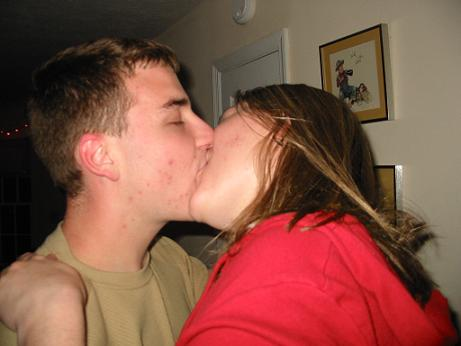

Yah, so I just beat Mario Kart. That shouldn't surprise anyone, it's my favorite game ever, I must have beaten it really fast, huh? It wasn't that hard, I remember being so annoyed with 150cc in Mario Kart 64...wow, I swear those computer players cheated! Well, I am through, I have no excuses for not working on my paper.
Friday was an interesting night. I really had no plans except maybe doing this Agnes Scott thing w/ Gen, but she never called me, so I decided to bum around. Missy was in a really strange mood that evening, and she was really into going to the Krush Girls, so that's what we did. I went over to her place and we went to some party next door. I had one drink, it was really gross, and I don't remember getting any buzz. We left and went to the 40 Watt, and Missy kept going on on how she had never been so drunk off so little (she had maybe 3 or 4 drinks). We got into the place and saw Alex and BJ. Missy found her piece for the evening, and I spent all my time trying to protect her from herself. This guy was a creep, and after a while, he finally figured I wouldn't go away. I should talk to Missy about the creepy guys that want to fool around with her, it's really disgusting...
Anyways, the highlight of the evening would be watching some idiot walk the line outside and get arrested for DUI. I bet he was embarassed, but that's the price you pay. I saw Allyson at the 40 Watt! I haven't seen her in forever, it was really nice, she's supa cool. Coolest girl in Athens, EASY!
Well, I stayed in w/ Matt on Saturday, that was nice. I didn't do a damn thing today, but ALL NIGHT TONIGHT, I think I'll write my English paper. Yah, I seem to work well under pressure. If my professors would stop giving me A's when I do overnights, maybe I'll change my methods. Oh well...busy week before I go home. Test on Tuesday. Uck...I think I'm coming down w/ something too...my tonsils are swollen and my throat hurts. I may lose my voice, that would be pretty neat...ah, I'm bored.
Goodnight.
I'm sorry if I offended anyone today. I didn't get any sleep last night, I've been in a crabby mood all day, I assure you it was not personal. On the bright side, my English paper has been dealt with, I won't be needing to worry about THAT anymore, that's a relief. I guess the rumors are correct. Finals really are upon us.
I want to bitch about something, but I think I'll hold it in for just a little bit longer. I'll say this. Tomorrow, my sister is coming to get me and take me home. My cousin is coming too. I'm really looking forward to being with my family on Thursday. I really genuinely hope that my faith in Thanksgiving will be restored this year. No one realizes, but last year's holiday was really horrible for me. Does anyone really know about that? I had such a hard time trying to find someone to talk to that day. It was just one of the most unpleasant times I've ever experienced, and it was the last time I ever saw my mother and father together. Well, I'm not working this year. This is a BIG first, I really should be working, I may be calling Target this weekend about working in December, but I'm still procrastinating that. I'd like to do overnights again, it's the quickest way for me to make a grand. It's also one of the most damaging things I can do to myself, but what the hell...isn't that what spring is all about? Recuperating from a miserable December.
Anyways, I have a picture to share! It's on the galleries page, but that's all confusing, so I leave you with this. Don't you wish it was you :-*

"Well, as for now I'm gonna hear the saddest songs / And sit alone and wonder / How you're making out..."